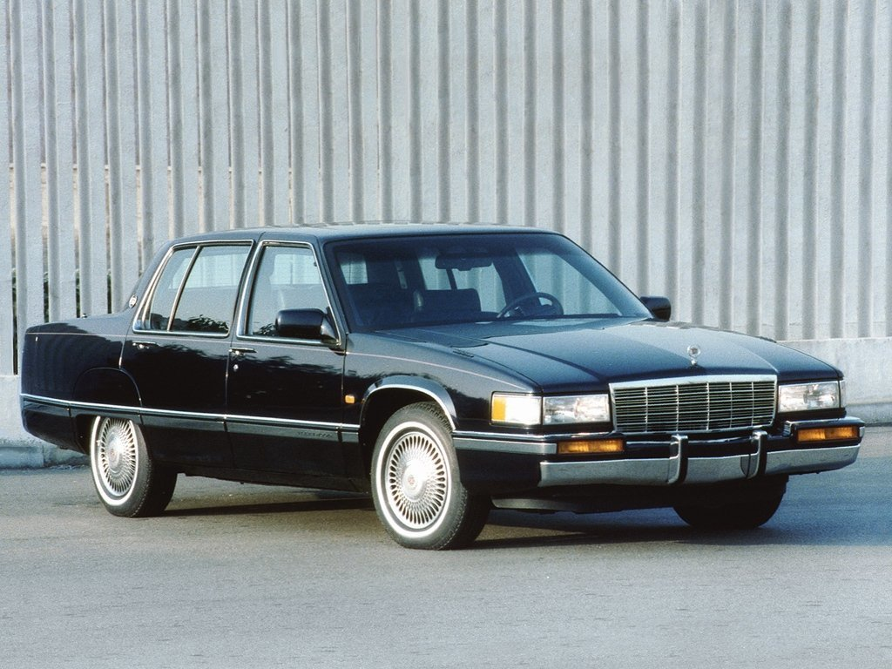

Стоит ли экономить на 95 бензине, заливая в бак 92-й
 Перейти к контенту DixNews: Все о машинах простым языком
Все самое интересное о машинах, технологиях и советы автолюбителям
Автокосметика Своими руками Советы автолюбителям Ремонт авто Тюнинг DN › Советы автолюбителям › Стоит ли экономить на 95 бензине, заливая в бак 92-й 14.05.2020 Советы автолюбителям 0 7.2к.Стоит ли экономить на 95 бензине, заливая в бак 92-й
Кто экономит на бензине? Тот, у кого нет средств тратиться на него. Возможно, у владельца достаточно средств на новый автомобиль, и он просто делает что захочет.
Однако большинство покупателей любят свое транспортное средство и использует те вещества, которые указываются в характеристиках.
Привычка экономить на топливе пришла из давних лет. Прежде выбор был мал – очень доступный и подозрительный 76-й и 92. Последний продавался на заправке. Здесь экономия была существенной.
Многие верили, что разница по сути невелика, и готовы были рисковать, зная, что новая машина будет им по средствам. На самом деле, низкооктановый 76-й является очень некачественным вариантом, со множеством добавок, или просто в основном из воды.
Долгое время считалось, что у нас производятся плохие машины, или продаются сплошь подделки. Возможно, причина частых поломок была совсем в другом – в неверно выбранном бензине.
Отличия в бензине
В настоящее время различия в стоимости между 92-м и 95-м достигает порядка 3 рублей. В итоге, экономия на одном баке не превысит 150 рублей. 1000 рублей – это достижение спустя 5 тысяч километров.
А 10 000 рублей — еще спустя 50 тысяч километров. Обычно за это время собственники убеждаются, что ремонт выходит дороже и не оправдывает экономии.
Давайте определимся с тем, что из себя представляет «неправильное топливо». На самом деле, это то, что не допускает использовать завод-изготовитель.
Получить эти данные можно из прилагающейся документации. В ней точно указывают, что нужно если АИ-95, то 92-ой бензин принесет проблемы, которые придется решать.
Что может ждать рискующего? Покажется, что машина едет так же. Мотор может калиброваться только с определенным видом топлива. В случае, если с мотором что-то случится в период гарантии, то в сервисе первым делом проверят ваше топливо. Соответственно, вам имеют право отказать в обслуживании, если выяснят, что инструкцию вы не соблюдаете.95-й бензин другой по характеристикам. В нем больше присадок, и с ними качественное транспортное средство работает дольше и безопаснее.
Большинство водителей убедились в этом на практике. Изначально, АИ-95 — это тот же АИ-92, улучшенный по составу. Отличия – в октановом числе. Если оно ниже, то и топливо хуже. Однако это не подтверждает, что для иномарки нужен 80-й бензин.
Выводы о бензине
Экономия – это свойство, о котором хорошо известно большинству людей. Если она велика, то это вызовет подозрения.
Подробно изучайте инструкцию по эксплуатации автомобиля. Ее можно найти в интернете. Тогда удастся понять, с каким октановым числом вам требуется бензин.
Встречается, что в инструкции пишут разброс от 92 до 95, тогда стоит применять оба вида топлива. Это не просто набор букв, а слова, за которые изготовитель несет ответственность.
Проявите ответственность. Машина должна быть безопасной. если вы используете ее неверно, то она придет в негодность, и хуже всего – вариант прямо во время движения. Возможно, небольшие расходы спасут вас от ненужных проблем.
Рейтинг ( 23 оценки, среднее 1.52 из 5 ) Комментарии 0 Поделиться: Загрузка ... Похожие материалыОхлаждаем салон автомобиля, если нет кондиционера
Основные признаки поломки генератора, которые заметит каждый водитель
Подбираем платную стоянку, чтобы быть уверенным в сохранности авто
Зачем просверливать отверстие в «юбке» автомобильного поршня
Почему сотрудники ГИБДД стали оштрафовывать за багажник на крыше авто?
Как обслуживаться в другом сервисе, чтобы не потерять гарантию на авто
О чем расскажет госномер б/у автомобиля новому владельцу
Правильно подбираем автомобильные присадки, чтобы они прослужили как можно дольше
Свежие записи Охлаждаем салон автомобиля, если нет кондиционера Основные признаки поломки генератора, которые заметит каждый водитель Подбираем платную стоянку, чтобы быть уверенным в сохранности авто © 2020 DixNews: Все о машинах простым языком Автокосметика Своими руками Советы автолюбителям Ремонт авто Тюнинг Adblockdetector